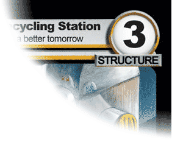

This is a brief introduction to the flow of the game. If you just want to jump right in use this guide. For a more in-depth introduction we encourage you to read the advanced rules.
Please note that this is, of course, a simplified version of the rules and not all rules will be covered here. Reading these rules, however, will allow you to get started with The Spoils and play using the precon decks.
Players strive to bring the opponent to 0 Influence Points (a standard game starts with each player having 25 Influence Points).
The players try to outsmart and out-maneuver each other by playing cards from their hands; these cards can come in the form of Characters that can be used to attack the opponent, Locations and Items that also bring continuous advantages to the table, or Tactics that are one-time use cards that can be used to surprise the opponent and turn the tide of battle.
Your faction starts the game in play. It provides essential abilities and affects how the game flows. You are only allowed to use one faction card.
If damage is inflicted to your faction, it loses an equal amount of influence. Once your faction has 0 influence, you lose the game.
Each faction holds certain special abilities that you can use during your turn or even on your opponent's turn.
Your characters can attack and block while they're in play. However, a character can't attack unless it started the turn in play under your control.
A character's strength represents how much damage it can inflict in battle, while its speed defines when that damage is inflicted. Its life represents how much damage it takes to destroy it. If the damage a character receives in a single turn is ever equal to or greater than its life, destroy it immediately.
Items stay in play and have an ongoing impact on the game.
Some items can be attached to other cards in play. For example, an item with the keyword "Attach to Character" in its rules text means it should be attached to a character while it's in play.
Locations stay in play and have an ongoing impact on the game. However, they are vulnerable since they can be attacked by your opponent's characters.
If a location receives damage, it gains damage counters. Unlike characters, the damage a location receives is not forgotten at the end of each turn. If the damage counters on a location are ever equal to or greater than its structure, destroy it immediately.
Tactics have a one-time impact on the game. When a tactic resolves, follow its instructions and put it into your discard pile.
Tactics are special because they can be played in response to your opponent's actions, even if it isn't your turn. There are also special times during battles when you can play tactics.
You use resources to pay for your cards. The more resources you accumulate, the bigger and better things you can play.
Staple resources are the simplest kind of resource and your deck is usually full of them. Each trade has its own staple resource type. Arcanist uses Obsession, Banker uses Greed, Gearsmith uses Elitism, Rogue uses Deception, and Warlord uses Rage.
Every staple resource card provides you with a distinct resource icon. These icons appear prominently on the resource and correspond to the threshold icons in the upper left corner of your other cards.
You can't play a card until you've met its threshold. For example, if a card has a threshold of 2 Rage icons, you can't play it until you control at least 2 Rage resource cards. But once you control those resources, you can play any number of cards with a threshold of 2 Rage icons.
When a card lets you play a resource, you don't always need an actual resource card. You can instead put any card from your hand into play face-down. Face-down resources provide the Volition icon.
During your turn you may do as many things as you want as many times as you like and in any order you want, as long as you can satisfy all costs. Therefore, you may:
Many cards have abilities in their rules text. Every ability has a center-justified name and a clearly labeled cost and effect section. For example:
Some abilities even have threshold icons next to the name. You can't use an ability unless you've met its threshold and can satisfy all its costs.
Just like tactics, abilities can be used in response to your opponent's actions even if it isn't your turn. There are also special times during battles when you can use abilities.
You get a chance to respond every time your opponent plays a card, uses an ability or ends their turn. If you choose to respond, you can play tactics and use abilities. All your responses resolve before your opponent's action happens.
Keep in mind that even responses can be responded to. A series of responses can go back and forth between players any number of times. Just remember that the last response made always resolves first.
You win the game by attacking your opponent's faction. Characters can act alone or join together in battle parties. The way you combine your characters can drastically affect a battle's outcome. Since you can attack as many times as you want each turn, you have lots of battle options. To attack, follow these steps:
Characters with the same speed inflict their damage at the same time, but each speed group is handled separately. Start with the highest speed characters and work your way down. For each speed group, follow these steps:
Repeat these steps until you've handled every character. Afterwards, all surviving characters in both parties are depleted and the battle is over.
The player whose turn it is currently.
If an effect says "all" it is referring to everything, even if you control it. For example, if a card says "inflict 2 damage to all characters" then it would inflict damage to your characters as well as your opponent's.
When you are resolving a battle, damage gets assigned before it is actually inflicted. This gives the players a chance to react to the damage with tactics and abilities. However, once damage has been assigned it will still be inflicted even if its source leaves play beforehand.
If there is nothing left for a character to assign its battle damage to, the character doesn't do anything but it is still considered to have assigned its battle damage.
If a phrase begins with the word "at" then it is probably a trigger. ("At the start of your turn, draw a card.")
See also Trigger
To attach one card to another, arrange the attaching card so it overlaps the target card. When you attach a card to something, it is simultaneously detached from anything else it is already attached to.
An attaching card can only be attached to one target at a time. However, target cards can have any number of cards attached to them at once.
If a target card leaves play, any cards attached to it leave play in the same way. This includes being destroyed, removed from the game, put into owner's hand, or shuffled into owner's deck.
See also Attach to [Type]
A keyword that summarizes how to handle certain cards that need to be attached to other cards.
When you play a card with this keyword, you must pick a target card of the appropriate type as the first extra cost. When the attaching card resolves, it enters play attached to the target card.
If the attaching card's target is no longer in play by the time it resolves, put it into its owner's discard pile instead of into play.
If the attaching card is put into play by an effect that does not specify a target for it, you must pick a target card as the attaching card enters play.
If the target card stops being the appropriate type, destroy the attaching card immediately.
See also Attach
Any character that is currently part of an attacking party.
The group of characters under the attacking player's control during a battle. The attacking party is always targeting either a faction or location.
See also Target of an Attack
The player who started the current battle.
A period of time starting when a player attacks and ending when the battle is finished being resolved.
The damage inflicted by characters as part of the steps in How to Resolve a Battle on the front of this sheet.
A group of characters, either attacking or blocking, that are involved in a battle.
You are "being attacked" during any battle in which your opponent has attacked one of your factions or locations.
To stop an attacking party from damaging its target by getting in its way.
Any character that is currently part of a blocking party.
The group of characters under the defending player's control during a battle. If the defending player chooses not to block with any characters, there is no blocking party during that battle.
If an effect says you "can" do something but another effect says you "cannot", the most recent effect always wins.
There's a difference between saying you "can" do something and being instructed to "do" that thing. For example, if a card says "characters cannot be destroyed" then all "destroy a character" instructions have no effect.
There are six card types: faction, resource, character, tactic, item, and location. A card's type can be found on its type line, just after its trade. Some cards can have more than one type at the same time.
If a card with the "character" type loses that type, it forgets all damage it received this turn and it is removed from any battle it is currently in.
If an effect refers to a specific type, but the card it is trying to affect is no longer that type, then the card is not affected by that effect. For example, if an effect says "destroy the character" but the card it is trying to destroy is no longer a character, nothing happens.
See also Remove From Battle
If you think you are going to lose, you can give up at any time during a game. If you concede, your opponent wins the game immediately.
Conditionals use the word "while" followed by a condition to define an effect that is only active while the condition is true. For example, a card might say "while your opponent controls a character, this card gains 1 strength and 1 life." This effect immediately ceases if your opponent ever stops controlling a character.
A way of playing The Spoils using decks that you build ahead of time. An official constructed deck needs a faction card and a minimum of 75 additional cards. You can't include more than 4 copies of any regular card. However, you can include any number of staple resources in your deck.
See also Limited Play
You control the cards that you play. You also control the effects and abilities on cards you control.
Some effects let a player take control of a card that isn't theirs. If this happens to a character in a battle, the character is removed from the battle immediately.
If more than one effect takes control of a card, the most recent effect wins.
See also Owner, Remove From Battle
The player who controls a card, ability, or effect.
A keyword that summarizes how to handle cards that have special attacking and blocking rules.
If all members of an attacking party have the covert keyword in their rules text, that party is considered a covert party. Only covert characters can block a covert party. Also, covert characters can't block regular parties.
If an effect says a character "gains covert" then the character is considered to actually have the covert keyword in its rules text.
An attacking party containing only covert characters. If any of the members of a covert party lose covert during the battle, the party immediately isn't covert anymore. However, if the blocking party is already formed, nothing changes since the characters have already blocked.
This is what destroys characters and locations and reduces your faction's influence. Each card type has its own way of handling damage that is inflicted to it.
If something tries to inflict 0 damage, then no damage is actually inflicted.
See Source
Different types of play have their own set of deck building rules.
See Constructed Play and Limited Play
The player being attacked during a battle.
Sometimes you're instructed to deplete a card to show it's been used. You can indicate that a card is depleted however you want as long as it's clear to your opponent. You can only deplete a card if it isn't depleted already.
See also Restore
To put a card in play into its owner's discard pile.
To put a card from your hand into your discard pile.
To put the top card of your deck into your hand. If you run out of cards to draw you don't lose the game, you just fail to draw the remaining cards.
Cards are always drawn as a group. For example, if a card says "draw 2 cards" then you get them at the same time instead of 2 separate "draw a card" events.
A draw is also the term for a game that has no winner. Even though it's unlikely to happen, if both factions' influence score becomes 0 at the same time then the game is a draw.
If you are instructed to duplicate a tactic, an "invisible" copy is created. Its cost number is considered to be 0 and you don't need to meet its threshold. The copy has all the rules text of the original, so you must still satisfy all its extra costs. If you can't, the duplicate is terminated.
If a card's rules text has several labeled options, you can choose a new option for the duplicate.
If an effect restricts you from playing tactics, any duplicates created while that restriction is active are terminated immediately.
See also Terminate
Anything that a card or ability does to affect the game.
A card enters play any time it moves from one game area into the in play area.
To reword a card so it functions as intended. Most errata clarifies the card's text so that it interacts properly in complicated situations.
Every card must be played according to its most recent version. You can find the current text for all cards on our web site at www.thespoils.com/rules.
Any number that is a multiple of two. (0, 2, 4, 6, 8, etc.)
When a card's front face can't be seen during game play. Every face down card in play is considered a resource.
A face-down resource's controller is always allowed to look at it if they want.
When a card's front face can be seen by both players. Most cards are face-up while they're in play, in a discard pile, or out of game.
If a face-down resource is flipped face-up, it stops being a resource and it is considered to have left play. If applicable, its face-up version is considered to have entered play as a completely new card.
If a face-up card is flipped face-down, it is considered to have left play. It becomes a face-down resource and that resource is considered to have entered play as though it were a completely new card.
A keyword that summarizes how to handle cards that can be played while they are face-down resources.
If one of your face-down resources has the Flip Up keyword, you may play the card as though it were in your hand by flipping it face-up. You must substitute its regular threshold and cost number for its Flip Up threshold and cost number. Also, if the card has any Flip Up extra costs they must be satisfied before its regular extra costs.
A card's Flip Up threshold and costs are affected by anything that would affect regular thresholds and costs.
See also Flipping Cards
When you form a battle party, each of the characters performs an "attack" or "block" action. Anything that triggers when a character attacks or blocks happens at this time. ("If this card attacks, your faction gains 2 influence.")
Once the party is formed, the characters are in a state of "attacking" or "blocking" which may activate certain effects on your cards. ("While this card is attacking, it gains 1 strength.")
If a character is added to a party after it is originally formed, the character didn't technically perform the "attack" or "block" action so anything that would normally trigger doesn't. However, the character is still considered to be "attacking" or "blocking" so any effects that check for that are still active.
If an effect lets you play a card for "free" then its cost number is considered to be 0 while you play it. But you still need to meet its threshold and satisfy its extra costs.
See also Numeric Cost
Cards are always within one of these game areas: deck, hand, being played, in play, discard pile, or out of game.
If a card moves from one game area to another, any unresolved effects that were going to impact it in the old area "lose track" of it. For example, if an effect would put a character into your hand when it resolves but that character is destroyed in response, you don't get to put the character into your hand from your discard pile.
A subtype usually used for items. Sometimes they have the Attach to [Type] rules text.
See also Attach to [Type]
When a phrase begins with the word "if" then it is probably a trigger. ("If this card is destroyed, draw a card.")
See also Trigger
A character is considered to be "in a battle" while they are a member of either an attacking or blocking party.
If a character refers to another character that is "in a party with" it, any member of that party meets this criteria, even the character doing the check. For example, if a card says "pick a character in a party with this card" then you could pick the card itself.
To add to a number's value. If a number is increased and/or reduced by more than one effect at the same time, apply all increases in any order you want followed by all reductions in any order you want.
See also Reduce
To apply damage to a character, faction, or location.
The score on your faction that keeps you in the game. When damage is inflicted to your faction, it loses an equal amount of influence. Once your faction has 0 influence, you lose the game. If both factions go to 0 influence at the same time, the game is a draw.
If a phrase contains the word "instead" then it is probably a replacement. ("If this card would go to a discard pile from play, put it into its owner's hand instead.")
See also Replacement
Text that appears in italics is not considered rules text. It is simply a reminder or descriptive text about the card's overall theme.
Used to summarize complex card effects. Keywords appear in bold letters in a card's rules text.
When a card moves from in play to another area. This happens regardless of which area the card moves to.
A way of playing The Spoils™ using only cards from sealed packs. An official limited deck needs a faction card and a minimum of 45 additional cards. You're allowed to add any number of staple resources to your deck.
See also Constructed Play
If a faction loses influence it's not the same as receiving damage, so anything that would affect damage doesn't affect the loss of influence. For example, a card might say "your opponent's faction loses 2 influence" while another card says "if damage is inflicted to a faction, reduce the amount by 1." Your opponent's faction would still lose 2 influence because the other effect only reduces damage.
If an instruction contains the word "may" then you don't have to follow it.
If you forgot to follow a "may" instruction then it's assumed you chose not to do it.
Any object used to represent a Micromajig created by an effect. Micromajigs are considered Gearsmith character cards with 1 strength, 1 life, 3 speed, and the "majig" subtype. If a Micromajig leaves play, it is removed from the game.
The owner of a Micromajig is the player who controlled the effect that created it.
If something is reduced to "a minimum of" that restriction doesn't apply if the thing was already less than that minimum. For example, if a numeric cost of 0 is reduced by 1, to a minimum of 1, then that numeric cost is still 0.
See also Reduce
To redraw part of your starting hand. You're allowed to put any number of cards from your starting hand on the bottom of your deck in any order then draw an equal number of cards. You only get to do this once per game.
If a phrase contains the word "must" then it is probably a requirement. ("If you are attacked and this card could block, this card must block.")
See also Requirement
If you are instructed to "name a card" then you must choose an actual The Spoils™ card.
The numeric cost of a card is usually equal to its cost number. If a card doesn't have a cost number, its numeric cost is equal to 0.
While a card is being played, its numeric cost is handled differently. You must calculate it by keeping a running total of cost additions, increases, and reductions.
When you play a card, its running total starts as its cost number. Then, you satisfy its extra costs. If an extra cost says "pay" followed by a number, you don't pay it right away. Instead, you add that number to the running total.
Once all the extra costs are satisfied, you then apply all cost increases to the running total in any order you want, followed by all cost reductions in any order you want. The overall total is the card's numeric cost while it's being played. Finally, you pay that amount.
An ability's numeric cost is handled in the same way. But since abilities don't have an inherent cost number, any ability without a "pay" instruction in its cost section is considered to not have a numeric cost at all.
The party under your opponent's control during a battle.
You own any card that started the game as a part of your deck, regardless of who currently controls it. Ownership of a card cannot change during a game.
See also Control
The player who owns a card.
See Battle Party
If you are instructed to "pay" a number, you must attach that number of resources to your faction.
The word "pick" is a special term used when a card needs to affect another card.
Unless otherwise mentioned, you can only pick cards in play. Also, you can't pick a faction unless an instruction specifically says to pick a faction.
If you are instructed to "play a card" then you must follow the steps in How to Play a Card on the front of this sheet. This means you can't play a resource since they are handled differently. However, you can play a character, item, or location even if it's not your turn.
See also Play a Resource, Put
If you are instructed to "play a resource" then you can either put an actual resource card from your hand into play, or you can put any card from your hand into play as a face-down resource.
If a card says it "provides" resource icons, those icons are exactly like the ones on your staple resources. ("This card provides – ")
If you are instructed to "put" a card it's not the same as to "play" it. Putting a card simply moves it from one area to another, while playing a card follows its own set of steps.
See also Play a Card
To subtract from a number's value. If an effect tries to reduce a number below 0, that number stays at 0. Negative numbers don't exist in The Spoils™.
If a number is increased and/or reduced by more than one effect at the same time, apply all increases in any order you want followed by all reductions in any order you want.
See also Increase
If a character is removed from battle, it is no longer attacking or blocking. Any battle damage assigned to the character is not inflicted.
To put a card into the out of game area.
Replacements use the word "instead" to define one thing that replaces another. For example, a card might say "if this card is put into your discard pile from play, remove it from the game instead." In that case, the card would never go to the discard pile; going to the discard pile is completely replaced with removing it from the game.
Some replacements say "the next" in their rules text to define something that could be replaced in the future. These effects are called delayed replacements because they don't replace something immediately. They wait until whatever they are trying to replace happens.
Under rare circumstances, a series of replacements might try to create infinite recursion. However, this situation is avoided because each replacement can only be applied to the same thing once.
Requirements use the word "must" to define something you are required to do. If you can't meet the requirements for an action then you can't take that action. For example, a card might say "your opponent must pay 2 for each attacking party they form." In that case, your opponent could not form a new attacking party unless they could meet the requirement by paying 2.
To restore a card, undo whatever you did to deplete it. Your faction's restore rule tells you how your cards are restored each turn.
See also Deplete
A card's type is either faction, resource, character, tactic, item, or location. If an effect checks for the "same type" then it doesn't care about anything besides these types. For example, a Banker character and a Gearsmith character are the same type, just with different trades.
Usually, you are required to find all cards that you're instructed to search for. However, if a card must match specific criteria ("search your deck for an item") you are allowed to fail in finding it either by choice or necessity.
Whenever a deck has been searched, its owner must shuffle it afterwards.
To sufficiently randomize a deck.
An ability or effect's source is the card that generated the ability or effect.
If a card's effect instructs you to "inflict" damage, then that card is considered the source of that damage. For battle damage, its source is the character which assigned it.
See Control
The faction or location being attacked during a battle.
To stop something before it resolves. If you are instructed to terminate something, you must cease following any instructions associated with it immediately. If it's a card, put it into its owner's discard pile.
If an effect contains the words "this turn" then it only lasts for the duration of the current turn. ("This turn, this card gains 2 strength.")
A bead, coin, or other object placed on a card in play. Tokens have no inherent meaning, so a card always explains how it uses tokens in its rules text. If a card leaves play, any tokens on it disappear.
See also Micromajig Token
Triggers begin with the words "if", "when", or "at" and are followed by a trigger condition. If the trigger condition happens, you must immediately follow the instructions of the trigger, even if you are in the middle of resolving something else. No one can respond to triggers.
If a trigger happens while a player is satisfying the costs of a card or ability, the trigger waits until after the costs are completely satisfied before it actually resolves.
See Card Type
See Control
A keyword that summarizes how to handle cards that you're only allowed to control one copy of at a time.
If a card says "Unique Beatrix", for example, then you can't control more than one card with that in its rules text. If you ever control more than one of these cards, you must choose one to keep and destroy the rest.
This restriction only applies to your cards, so your opponent is allowed to have their own copy of a "Unique Beatrix" card in play at the same time.
Cards with variables (X, Y, Z, etc.) fully explain how those variables are used in their rules text.
If you are instructed to choose a number for a variable, you must choose a whole number (2 is fine, but not 3.5).
If a phrase begins with the word "when" then it is probably a trigger. ("When this card enters play, draw a card.")
See also Trigger
Some cards include the rules text "you may play this card whenever you could play a tactic." Although you can play them at the same times, these cards are never considered to actually be tactics.
If a phrase begins with the word "while" then it is probably a conditional. ("While this card is attacking, it gains 2 strength.")
See also Conditional
See Variable Numbers
Always refers to a card's current controller.